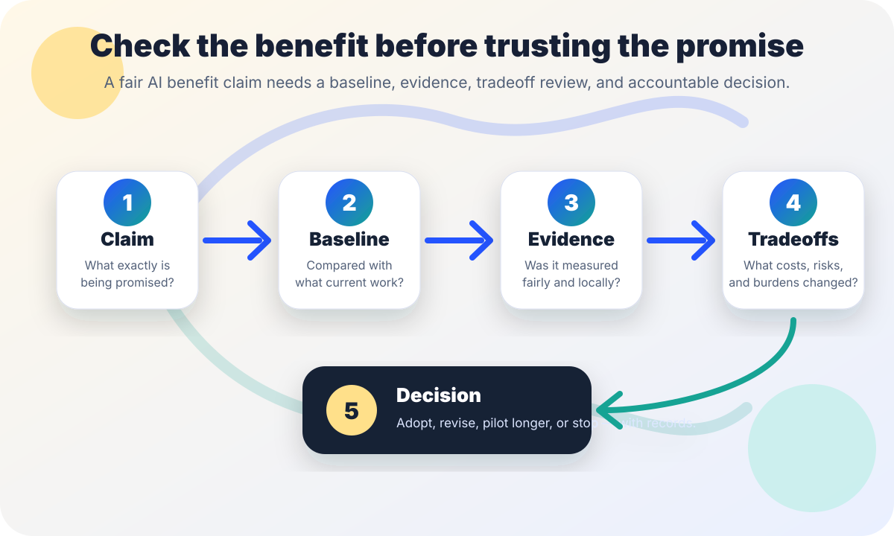

AI governance and evidence
AI benefits-claim review.
A practical checklist for checking whether promised AI time savings, cost reductions, accuracy gains, or service improvements are measured fairly before adoption, renewal, or expansion.
The short answer
An AI benefit claim is not evidence just because it has a percentage, a dashboard, or a vendor quote. Before relying on a claim, identify the exact benefit, the baseline, who was measured, what was excluded, what quality changed, what costs moved elsewhere, and who is accountable for correction.
Good AI measurement does not ask only “did the tool make a task faster?” It asks whether the whole workflow became better after privacy review, accessibility, training, error correction, appeals, staff burden, security, procurement cost, and public trust are counted.

Why this review matters
NIST’s AI Risk Management Framework emphasizes governance, mapping, measurement, management, documentation, and accountable roles for AI risk. OMB Memorandum M-24-10 directs U.S. federal agencies to manage AI uses with governance, risk management, testing, monitoring, and attention to rights- and safety-impacting contexts. Those ideas apply beyond federal agencies as a practical habit: benefits and risks should both be measured, documented, and owned.
The Federal Trade Commission warns businesses to keep AI claims in check, including by avoiding exaggerated performance claims or claims that a product does something better than a non-AI product without adequate proof. In 2024, the FTC also announced enforcement actions against deceptive AI claims and schemes. The civic lesson is plain: do not let a shiny benefit claim become policy evidence until the claim can survive ordinary measurement questions.
1. Minimum checks for any AI benefit claim
| Check | Question to answer | Evidence to keep |
|---|---|---|
| Exact claim | Is the claim about time, cost, accuracy, satisfaction, access, compliance, backlog, or staff capacity? What number or outcome is promised? | Claim text, source, date, speaker or vendor, and the decision it is meant to support. |
| Baseline | Compared with what: current workflow, a pilot group, a different vendor, a past period, or an idealized estimate? | Pre-AI workflow notes, time logs, case volume, staffing level, service standard, and data period. |
| Population | Who was included or excluded? Were hard cases, accessibility needs, multilingual users, appeals, edge cases, and failures counted? | Sample definition, inclusion and exclusion rules, subgroup checks, and missing-data notes. |
| Quality | Did speed or cost improve while accuracy, completeness, fairness, accessibility, explainability, or user experience got worse? | Quality rubric, error review, user feedback, correction logs, and appeal outcomes. |
| Hidden costs | Did work move to reviewers, IT, security, procurement, training, records, privacy, supervisors, or the public? | Staff time, vendor fees, training time, review time, incident handling, and support tickets. |
| Durability | Does the benefit hold after novelty fades, model updates, policy changes, seasonal workload, new users, and monitoring costs? | Post-pilot review dates, model/version notes, renewal metrics, and owner signoff. |
| Decision path | Who can accept, reject, narrow, pause, or remeasure the claim if evidence is weak? | Named owner role, decision memo, stop rule, and next review date. |
2. Sort evidence by strength
| Evidence type | Use with caution when... | Stronger when... |
|---|---|---|
| Vendor marketing claim | The method, sample, baseline, and failure cases are not disclosed. | The vendor provides documented methods, local validation support, limitations, and auditability. |
| Anecdote | One team or champion says the tool “feels faster” without logs or quality checks. | Anecdotes are used to identify hypotheses, then checked against measured workflow data. |
| Dashboard metric | The metric counts outputs, clicks, drafts, or minutes saved but ignores rework and corrections. | The metric includes quality, review burden, errors, appeals, excluded cases, and confidence intervals or caveats where available. |
| Pilot study | The pilot uses easy cases, expert users, extra support, or a short window that will not match ordinary operations. | The pilot includes representative cases, trained ordinary users, before/after baselines, and documented stop rules. |
| Operational review | Only success stories reach leadership and failures are handled informally. | Incidents, complaints, accessibility barriers, privacy issues, and staff burden are tracked alongside benefits. |
3. A simple review workflow
- Write the claim in one sentence. Example: “The tool will reduce intake review time by 30% without reducing accuracy.” If the claim cannot be written plainly, it is not ready for a decision.
- Name the decision. Is the claim supporting a purchase, renewal, expansion, public announcement, budget request, staff change, or policy change?
- Capture the current baseline. Record how the workflow works now, including volume, time, quality, staffing, rework, complaints, and exceptions.
- Measure the whole workflow. Count review, correction, training, support, security, privacy, accessibility, procurement, and records work, not only the AI tool’s output time.
- Check who benefits and who pays. A tool can save central staff time while increasing burden for frontline workers, disabled users, non-English speakers, appeal reviewers, or the public.
- Document limits before sharing. Public claims should state the measured setting, sample, time period, uncertainty, and what has not been tested.
- Decide with a recheck date. Adopt, narrow, extend the pilot, renegotiate, or stop. Set a date to remeasure after model updates or workflow changes.
4. Lightweight benefits-claim log
| Field | What to record |
|---|---|
| Claim | Plain-language claim, source, date, metric, and decision it supports. |
| Baseline | Pre-AI process, sample period, workload, staffing, quality standard, and known pain points. |
| Measurement | Data source, inclusion and exclusion rules, sample size or case count, reviewer role, and limitations. |
| Tradeoffs | Errors, rework, appeals, accessibility barriers, privacy/security review, training, support, and hidden costs. |
| Decision | Adopt, revise, pilot longer, reject, or pause; owner role; review date; and public caveats if the claim will be shared. |
Stop rules
- Pause if the claim has no baseline or compares against an unclear “before.”
- Pause if the benefit counts AI output but not human review, correction, training, support, or incident handling.
- Pause if the sample excludes hard cases but the decision will affect all cases.
- Pause if speed or cost claims ignore quality, accessibility, privacy, security, appeals, or public trust.
- Pause if a vendor or champion will not share enough method detail for local validation.
- Proceed only when an accountable owner can explain the claim, baseline, measurement, limitations, tradeoffs, and recheck plan.
Starter language for decision notes
Use this in a decision memo, adapting it to your setting:
AI benefits review note: The claimed benefit is [specific claim]. We compared it against [baseline] using [measurement method] for [sample/time period]. The evidence does/does not support the claim for [setting or population]. Known limitations are [limits]. Tradeoffs reviewed include [quality, privacy, accessibility, staff burden, cost, and appeals]. The owner will recheck the claim on [date] or after a material model/workflow change.
Related field guide pages
Sources
- NIST — AI Risk Management Framework: https://www.nist.gov/itl/ai-risk-management-framework
- Office of Management and Budget — Memorandum M-24-10, Advancing Governance, Innovation, and Risk Management for Agency Use of Artificial Intelligence: https://www.whitehouse.gov/wp-content/uploads/2024/03/M-24-10-Advancing-Governance-Innovation-and-Risk-Management-for-Agency-Use-of-Artificial-Intelligence.pdf
- Federal Trade Commission — Keep your AI claims in check: https://www.ftc.gov/business-guidance/blog/keep-your-ai-claims-check
- Federal Trade Commission — FTC announces crackdown on deceptive AI claims and schemes: https://www.ftc.gov/news-events/news/press-releases/2024/09/ftc-announces-crackdown-deceptive-ai-claims-schemes
This page is public education, not legal, procurement, accounting, audit, or statistical advice. Measurement needs differ by context, law, risk level, budget process, and affected population.